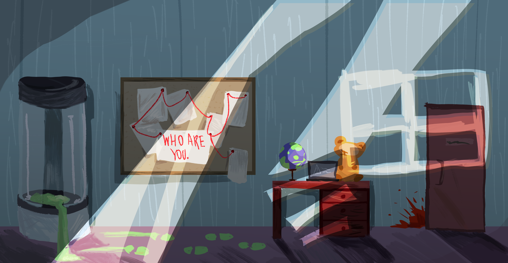

RISC-V RV32I Emulator
RustBuilt the memory layer and an RV32I decode-and-execute pipeline, translating machine-code instructions into software operations that run programs according to the instruction set's semantics.
A GPT-2-scale language model built from scratch in PyTorch: byte-pair tokenizer, decoder-only transformer, pretraining, ported GPT-2 weights, and instruction fine-tuning. Read more →
A fully pipelined 5-stage RISC-V (RV32I) processor written from scratch in Verilog, with forwarding and load-use hazard detection, built up from a verified single-cycle core. Read more →

A Danganronpa-style visual novel about a person who wakes up as a mantis-human hybrid. Investigate your surroundings, gather evidence, and question the people around you to uncover how you became this way.
Built in one week for the Game Design DeCal game jam.
Download playable build (macOS, 50 MB) →
Unzip, then right-click playtest.app and choose Open, since the build is not notarized.
Built the memory layer and an RV32I decode-and-execute pipeline, translating machine-code instructions into software operations that run programs according to the instruction set's semantics.
Added user-process support to an instructional kernel: program loading, argument passing, and system-call handling with memory protection at the user–kernel boundary. More in CS 162.
SVG rasterizer with supersampling, hierarchical transforms, and texture mapping; Bézier curves and surfaces via de Casteljau; Loop subdivision on half-edge meshes. More in CS 184.